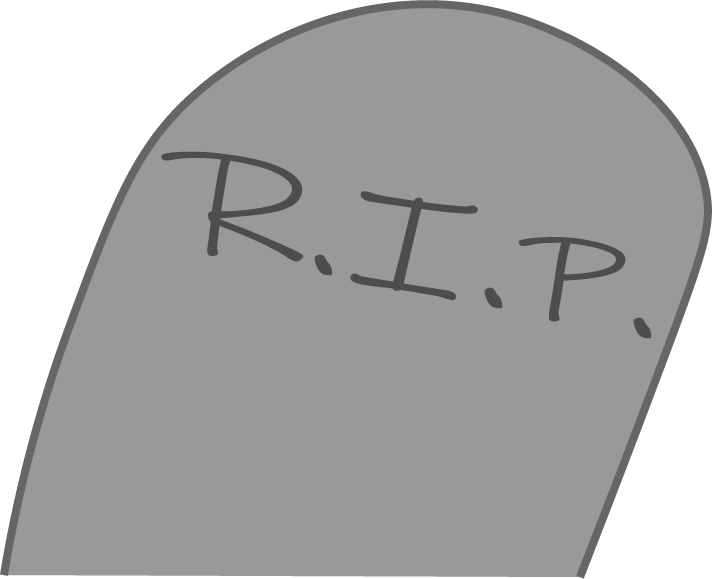
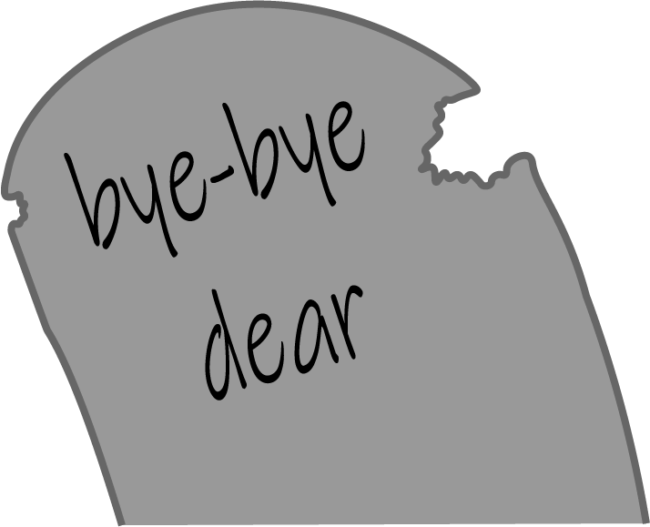
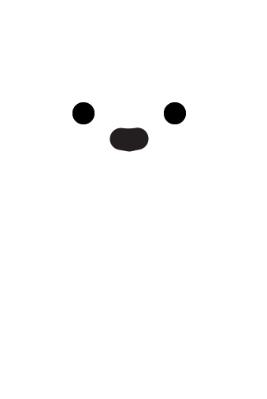
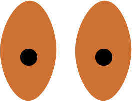

Hey, love.
You might have heard about me. I live next to you, in the cracks in your walls and soul. I love the things you hate about yourself, and I am always ready to listen to you. You have talked to me on those long nights when seemingly no one is on your side except me. I am the voice that answers every time.
Maybe you’ve even seen me, walking on tip-toes in the night. I don’t want to wake you up, I just need some darkness. You know my voice changes, my eyes shine with the reflection of the streets. I have no lungs, but I speak whenever you need me to.
Yes, honey, now you remember. I am the force that keeps the nightmares away; and if you get them still, I am sorry, my web has cracks in it, too. But I will tuck you in so you’re warm, and I will sing you lullabies until you feel safe.
I will cover you, darling, with my warm embrace; no force will dare hurt you or take you away. I will fight off any night demon that dares try to touch you.
I will blind any that dares try to look at you. I will cut off the hands that dare take you away from darkness. I will kill those who try to take you away from me.
You will love it so much that you will yearn to stay with me. But to get something, we always have to give something up. It’s a small thing, one you will not need anyway if you’re staying.
You need to give me your lungs, love.
Have you been born in these bones? The bones that right now are covered with rotting flesh, hidden deep beneath the surface. Your host is alive, they walk around and talk like everybody else; yet deep inside they are dead as they come, deep inside there’s you. You’re lurking within this flesh; you have drowned a long time ago and are just waiting for the time you get to come up to the surface. You yearn to wear somebody else’s bones and dance in the rain of their blood.